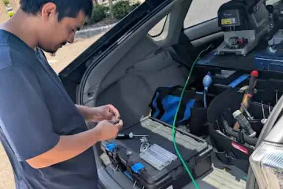

Residential Locksmith Services
Get help with a home lockout, rekey door locks after a move, or replace a worn lock or deadbolt.
Explore residential locksmith services →Compare your options for home, business, and automotive lock and key problems. Each service page explains common fixes and what to have ready before calling.
Get help with a home lockout, rekey door locks after a move, or replace a worn lock or deadbolt.
Explore residential locksmith services →
Repair storefront and office locks, rekey after a staff change, or plan a master key system.
Explore commercial locksmith services →
Get help with a car lockout, lost keys, compatible fob programming, or ignition trouble.
Explore automotive locksmith services →If the lock still works but you need to retire old house keys, ask about residential lock rekeying and installation. If a storefront door won’t latch or former staff still have keys, ask about commercial lock repair and rekeying. If you lost your only vehicle key, ask about car key replacement and programming, and share your make, model, and year.
If you aren’t sure whether the issue is the key, the lock, or how the door closes, describe the symptoms rather than ordering a replacement part first.
Tell us where you are in Riverview and what you need help with.